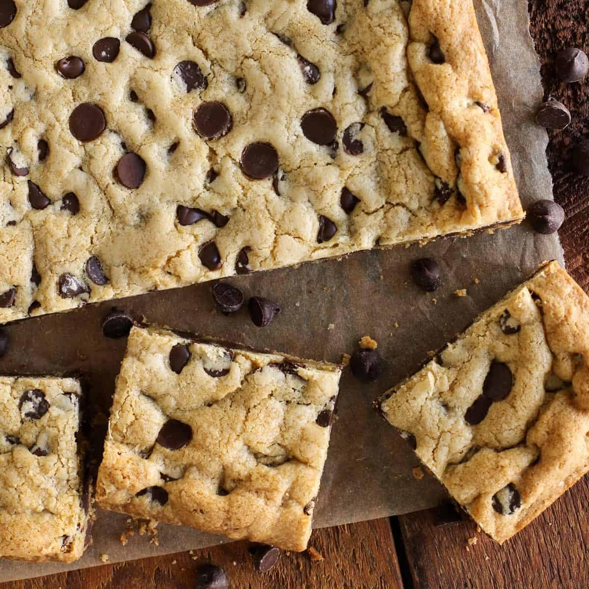

Maureen's Cookies

Description
Maureen's homemade cookies, baked with love and cooked to perfection! These cookies are to die for and quite popular at every party!
Ingredients
- 1 stick of salted butter, softened
- 1 stick of margarine, softened
- 1 1/2 teaspoon vanilla extract
- 1 teaspoon salt
- 1 cup granulated sugar
- 2 cups of sifted all purpose flour
- 1 cup of Nestle Tollhouse semi-sweet chocolate chips
Steps
- Preheat oven at 350 degrees fahrenheit
- Cream margarine and butter together with hand mixer or stand mixer on medium speed for 5-8 minutes
- Add vanilla and salt then continue creaming mixture on medium for 1 minute
- Slowly add sugar; one-quarter cup at a time in 3 minutes increments
- Slowly add flour; half cup at a time waiting until combined
- Add chocolate chips; combine by hand
- Empty batter into 12x9 inch baking sheet. Press batter into baking sheet completely
- Bake in oven for 20-25 minutes until light golden in color
- Remove from oven and rest for 5 minutes
- Cut into squares and place cookies on cooling rack to cool completely
- Put remaining cookies in airtight containers
Enjoy!